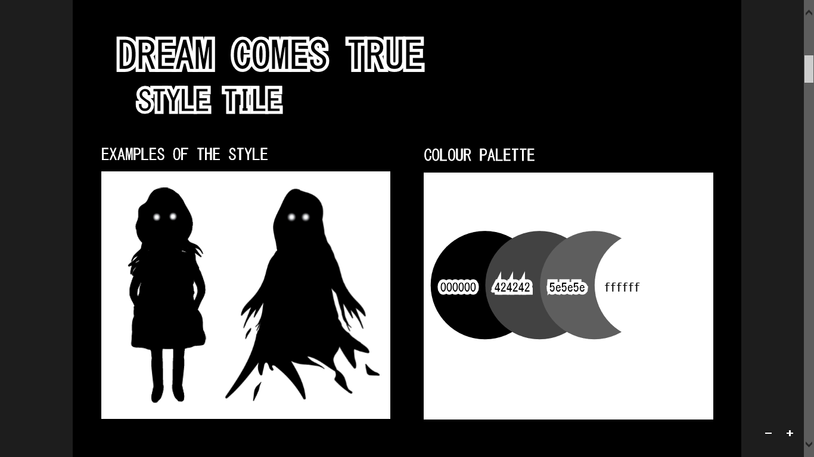
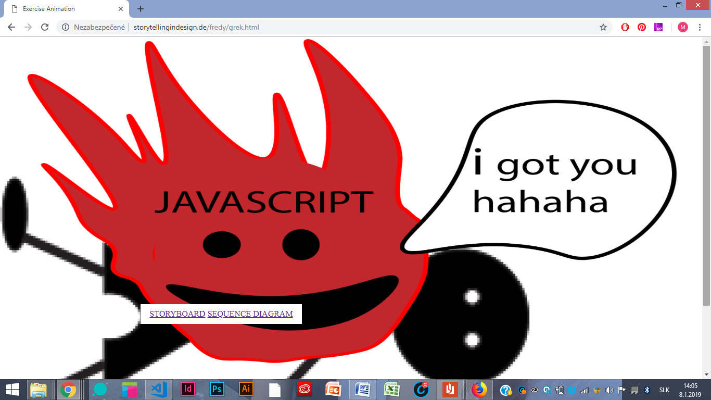
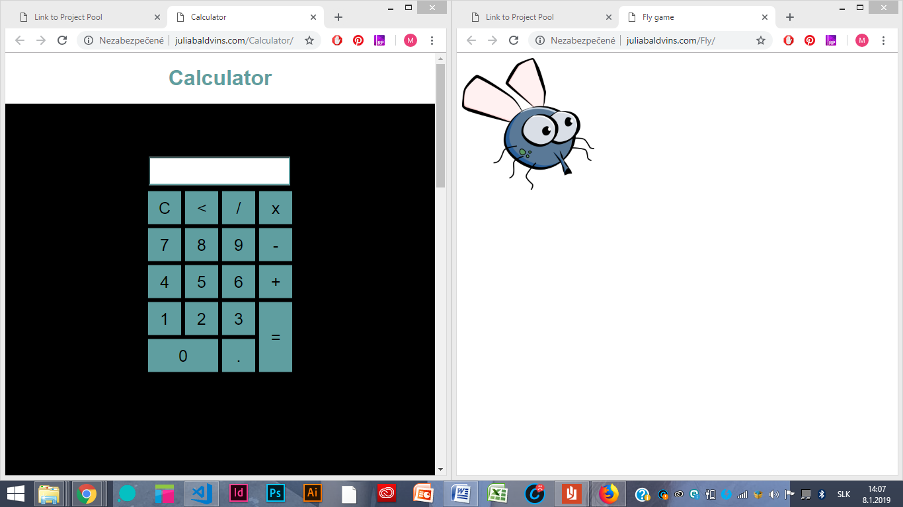
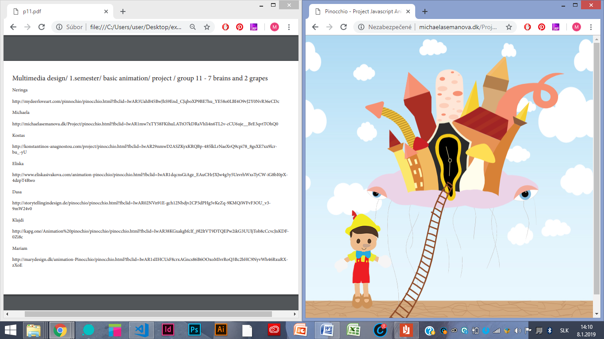
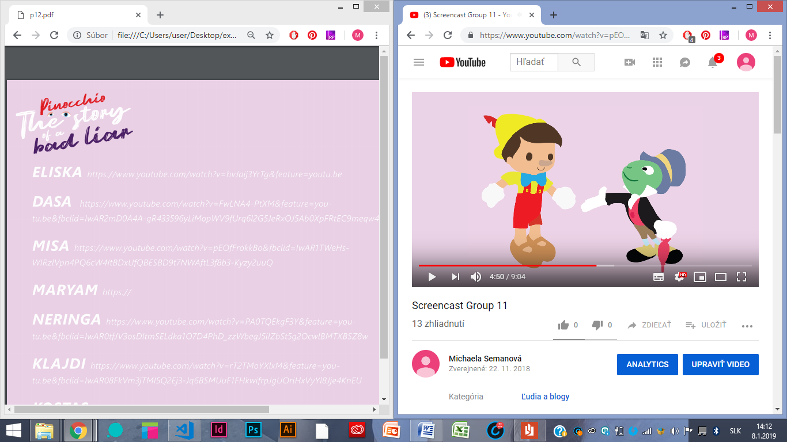

Designer vs. < Coder > . Basic Animation
» Basic Web » Basic Content » Basic Animation » Basic UX03.02.01 week submission_part one_ part two_part three
This was the time, when I should come up with my own story, in style I have chosen. The fact, that my happy colour is black and that I love to create everything in the dark colours decided to pick limbo style. Black. Grey. White. Most of the time I was using Adobe Illustrator and even though I have never used it before, I really enjoyed it. It was quite easy for me to draw my characters because I was working with graphic tablet. The document shows all steps I have to do before coming to the final version of my story. Story about teen girl going to study abroad.
 Go to Document »03.03.02 Interactive Animation
JavaScript. Animation. Yeah now it started. Difficult part of studying. This assignment was another from group ones. It was fun to create drawings and story, but the ending of funny part came right after it. Even despite the fact, that this assignment is not as good as it should be, we got some basic knowledge and improved it during making next projects. Everyone has to start somewhere.
 Go to Animation »03.03.03 ProjectPool day 1 + 03.03.04 ProjectPool day 2
Group of two girls - me and my classmate Julia - had to choose two project to create. The fly and the calculator. Best choice ever! We had fun, we made compromises... She was just the best girl I could be working with. The Calculator is working properly and game Smack the fly is amazing too. To make it work, we had to use our knowledge about HTML, CSS and JavaScript. I think, we did a good job.
 Go to page with links »03.04.05 Link to final interactive production
Do you know the fairy tale about Pinocchio? Yeah, this is not the exact way, little kids should know him. Don't you believe me? Have a look on your own.
 Go to Document (links) »03.04.06 Link to screen cast documentation
This is the video about our Pinocchio story. All the thing we have been through during creating animations. It was a group project, we had 2 coders, 2 people for UX and 3 for design and graphics. Everyone of us is talking in the video about the project generally or about his own part. I was one of 3 people for design and graphics, creating characters in Adobe Illustrator. I really enjoyed it because my whole grammar school and last years of elementary school I spent by drawing and painting anytime, anywhere.
 Go to Document (links) »